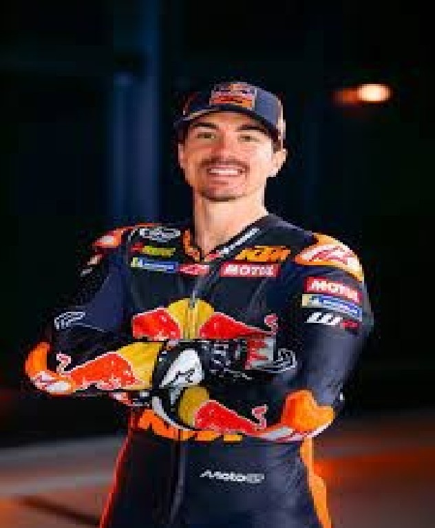

Maverick Viñales
¿Quién es Maverick Viñales?
Maverick Viñales es un piloto de motociclismo español que actualmente compite en MotoGP con el equipo Red Bull KTM Tech3. Llego a ser campeón del mundo en Moto3 en 2013.
Imagen de Maverick Viñales

Información biográfica de Maverick Viñales:
- Fecha de nacimiento: 12 de enero de 1995
- Lugar de nacimiento: Rosas, Gerona, España
- Altura: 1,71 m
- Peso: 64 kg
- Moto: KTM Tech3
- Dorsal: 12
Video de Maverick Viñales
Equipos en los que ha estado Maverick Viñales:
- Suzuki Ecstar de 2015 a 2016
- Yamaha Factory Racing de 2017 a 2021
- Aprilia Racing de 2021 a 2024
- Red Bull KTM Tech3 desde 2025 hasta la actualidad
Temporada 2024 de Maverick Viñales
| Puntos obtenidos | 190 |
|---|---|
| Posición en la clasificación final | 7 |
| Poles | 1 |
| Victorias | 1 |
| Podios | 1 |